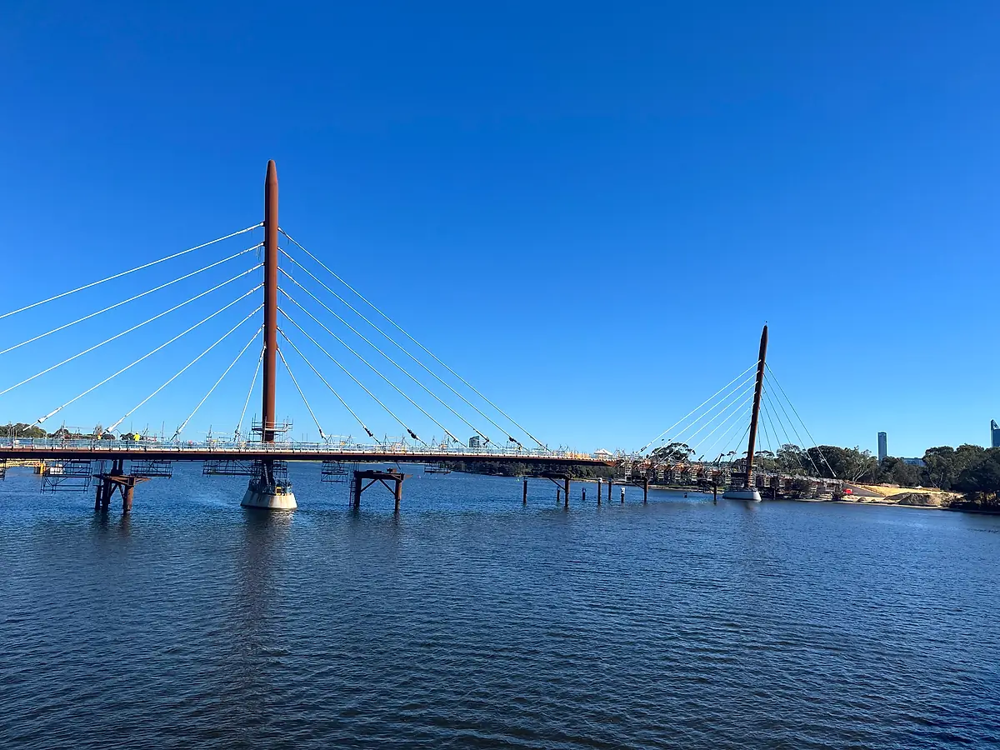

Earthworks
Stripping, bulk and detailed excavation, cut and fill, backfill and disposal.
Civil Estimating
Organised quantities and cost estimates for civil and infrastructure works — prepared from your drawings, specifications and scope so you can price and plan with confidence.
Need this ongoing? Get a dedicated estimator
Typical inputs
Outputs
Formats
Scope
The scope is confirmed with you before work starts, so you know exactly what will be measured and priced.
Stripping, bulk and detailed excavation, cut and fill, backfill and disposal.
Subgrade preparation, sub-base and base course by layer, surfacing, kerbs, footpaths and line marking.
Pipes by diameter and depth band, pits by type, headwalls, culverts, trenching, bedding and backfill.
Water and sewer mains, power and communications conduits, trenches, pits and crossings shown on the drawings.
Retaining walls, footings, kerbs, channels, slabs and structures.
Clearing and grubbing, demolition, temporary works and erosion and sediment control.
Quantities by material with labour and plant allowances where requested.
Site establishment and general items when required for your estimate.
Deliverables
Formula-linked Excel takeoff with drawing references
Bill of Quantities structured by work section, or set out to match the tender’s schedule of quantities
Cut/fill summary and site balance for the earthworks
Cost estimate with material, labour and plant breakdown (when pricing is requested)
Assumptions, exclusions and clarifications
Marked-up PDF drawings showing what was measured
Ideal for
Dedicated estimator available
Pricing civil and infrastructure work on a regular basis? Add a dedicated estimator to your team who learns your packages (earthworks, roads, drainage and utilities) and supports every tender.

How it works
Share drawings, scope and deadline.
We confirm deliverables and timeframe.
Quantities measured and organised.
Checked, then delivered in your format.
We prepare quantities and estimates for earthworks, roads and pavements, drainage, utilities, concrete structures and related site works. Share your scope and we will confirm how we can support it.
Yes. Cut and fill is calculated between the existing surface (survey or LandXML) and the design levels, using surface-to-surface, cross-section or grid methods depending on the information supplied. Strip depths, bulking and compaction factors are stated as assumptions, and results are reported as a cut/fill summary and site balance.
Both options are available. We can provide measured quantities only, or apply rates to produce a cost estimate — using your own rates where you prefer.
The one your contract calls for. Where the tender includes a schedule of quantities or a BOQ template, we measure to it. Otherwise we can follow ASMM in Australia, NRM2 in the UK, CSI MasterFormat in the USA, MasterFormat or the CIQS method in Canada, or NZS 4202 in New Zealand. Units (metric or imperial) and currency are agreed at the start.
Standard estimates are typically delivered within 48 hours. Larger civil packages, such as long road corridors, staged subdivisions or extensive drainage networks, take longer. We confirm the delivery date after reviewing your drawings and scope, before work begins.
Related
 16
16Cut, fill, excavation, backfill and earthworks quantity calculations.
Learn more 09
09Accurate measurement and quantification from project drawings.
Learn more 08
08Concrete quantities, reinforcement and related construction quantities.
Learn moreSend your drawings and scope. We will review the project and confirm deliverables and timing before any work begins.